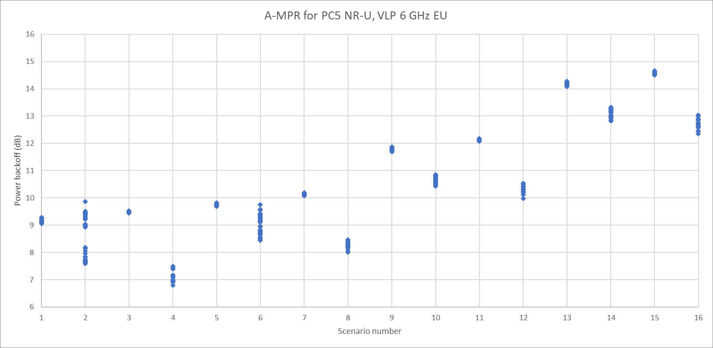

Technical Specification Group Radio Access Networks;
Introduction of 6GHz NR unlicensed operation
(Release 17)
The present document has been developed within the 3rd
Generation Partnership Project (3GPP TM) and may be further
elaborated for the purposes of 3GPP.
The present document has not been subject to any approval process by the
3GPP Organizational Partners and shall not be implemented.
This Specification is provided for future development work within 3GPP
only. The Organizational Partners accept no liability for any use of
this Specification.
Specifications and Reports for implementation of the 3GPP TM
system should be obtained via the 3GPP Organizational Partners'
Publications Offices.
3GPP
Postal address
3GPP support office address
650 Route des Lucioles - Sophia Antipolis
Valbonne - FRANCE
Tel.: +33 4 92 94 42 00 Fax: +33 4 93 65 47 16
Internet
http://www.3gpp.org
Copyright
Notification
No part may be reproduced except as authorized by written
permission.
The copyright and the foregoing restriction extend to reproduction in
all media.
UMTS™ is a Trade Mark of ETSI registered for the benefit of its
members
3GPP™ is a Trade Mark of ETSI registered for the benefit of its
Members and of the 3GPP Organizational Partners
LTE™ is a Trade Mark of ETSI registered for the benefit of its Members
and of the 3GPP Organizational Partners
GSM® and the GSM logo are registered and owned by the GSM
Association
This Technical Report has been produced by the 3rd Generation
Partnership Project (3GPP).
The contents of the present document are subject to continuing work
within the TSG and may change following formal TSG approval. Should the
TSG modify the contents of the present document, it will be re-released
by the TSG with an identifying change of release date and an increase in
version number as follows:
Version x.y.z
where:
x the first digit:
1 presented to TSG for information;
2 presented to TSG for approval;
3 or greater indicates TSG approved document under change
control.
y the second digit is incremented for all changes of substance, i.e.
technical enhancements, corrections, updates, etc.
z the third digit is incremented when editorial only changes have
been incorporated in the document.
In the present document, modal verbs have the following meanings:
shall indicates a mandatory requirement to do
something
shall not indicates an interdiction (prohibition) to
do something
The constructions "shall" and "shall not" are confined to the context
of normative provisions, and do not appear in Technical Reports.
The constructions "must" and "must not" are not used as substitutes
for "shall" and "shall not". Their use is avoided insofar as possible,
and they are not used in a normative context except in a direct citation
from an external, referenced, non-3GPP document, or so as to maintain
continuity of style when extending or modifying the provisions of such a
referenced document.
should indicates a recommendation to do
something
should not indicates a recommendation not to do
something
may indicates permission to do something
need not indicates permission not to do
something
The construction "may not" is ambiguous and is not used in normative
elements. The unambiguous constructions "might not" or "shall not" are
used instead, depending upon the meaning intended.
can indicates that something is possible
cannot indicates that something is impossible
The constructions "can" and "cannot" are not substitutes for "may"
and "need not".
will indicates that something is certain or expected
to happen as a result of action taken by an agency the behaviour of
which is outside the scope of the present document
will not indicates that something is certain or
expected not to happen as a result of action taken by an agency the
behaviour of which is outside the scope of the present document
might indicates a likelihood that something will
happen as a result of action taken by some agency the behaviour of which
is outside the scope of the present document
might not indicates a likelihood that something will
not happen as a result of action taken by some agency the behaviour of
which is outside the scope of the present document
In addition:
is (or any other verb in the indicative mood)
indicates a statement of fact
is not (or any other negative verb in the indicative
mood) indicates a statement of fact
The constructions "is" and "is not" do not indicate requirements.
1 Scope
The present document is a technical report for Work Item on New Radio
(NR) Access Technology, covering introduction of lower 6GHz NR
unlicensed operation for Europe (NR_6GHz_unlic_EU) and in the 5925-7125
MHz range for other regions (NR_6GHz_unlic_full).
2 References
The following documents contain provisions which, through reference
in this text, constitute provisions of the present document.
- References are either specific (identified by date of publication,
edition number, version number, etc.) or non‑specific.
- For a specific reference, subsequent revisions do not apply.
- For a non-specific reference, the latest version applies. In the
case of a reference to a 3GPP document (including a GSM document), a
non-specific reference implicitly refers to the latest version of that
document in the same Release as the present document.
[1] 3GPP TR 21.905: "Vocabulary for 3GPP Specifications".
[2] 3GPP TR 37.890: Feasibility Study on 6 GHz for LTE and NR in
Licensed and Unlicensed Operations
3 Definitions of
terms, symbols and abbreviations
3.1 Terms
For the purposes of the present document, the terms given in 3GPP
TR 21.905 [1] and the following apply. A term defined in the present
document takes precedence over the definition of the same term, if any,
in 3GPP TR 21.905 [1].
3.2 Symbols
For the purposes of the present document, the following symbols
apply:
3.3 Abbreviations
For the purposes of the present document, the abbreviations given in
3GPP TR 21.905 [1] and the following apply. An abbreviation defined in
the present document takes precedence over the definition of the same
abbreviation, if any, in 3GPP TR 21.905 [1].
ACLR Adjacent Channel Leakage Ratio
ACS Adjacent Channel Selectivity
BS Base Station
BW Bandwidth
EIRP Effective Isotropic Radiated Power
FR Frequency Range
GSCN Global Synchronization Channel Number
ICS In-Channel Selectivity
ITU‑R Radiocommunication Sector of the International
Telecommunication Union
NR New Radio
NR-ARFCN NR Absolute Radio Frequency Channel Number
OTA Over The Air
RF Radio Frequency
RX Receiver
SCS Sub-Carrier Spacing
TDD Time division Duplex
4 Background
Administrations in Europe have had unlicensed operation in the range
5925 to 6425 MHz for consultation. The result of this consultation is
that at the November 2020 meeting the ECC with ECC Decision (20)01 “on
the harmonised use of the frequency bands 5945 to 6425 MHz for the
implementation of Wireless Access Systems including Radio Local Area
Networks (WAS/RLANs)” approved unlicensed operation in the range 5945 to
6425 MHz. This initiated this TR which has later been expanded to also
include NR unlicensed operation in the 6 GHz band for other regions.
NR-Unlicensed is standardized in Rel-16 with the definition of band
n96 covering the spectrum range 5925-7125 MHz which is currently
applicable in the USA only subject to FCC Report and Order FCC 20-51.
For Rel-17 3GPP WG4 is tasked to also enable unlicensed operation in the
range 5945 to 6425 MHz for European deployments and in the 5925-7125 MHz
range for other regions.
Regulatory information is maintained in [2].
5 NR Frequency band
definition
5.1 Band definition
5.1.1
Band definition for lower 6GHz NR unlicensed operation
A NR band for unlicensed operation in the range 5925-6425 MHz is
defined as:
Table 5.1.1-1: NR operating bands in FR1
NR operating band
Uplink (UL) operating band
BS receive / UE transmit
FUL,low – FUL,high
Downlink (DL) operating band
BS transmit / UE receive
FDL,low – FDL,high
Duplex mode
n102
5925 MHz – 6425 MHz
5925 MHz – 6425 MHz
TDD3
NOTE 3: This band is restricted to operation with shared
spectrum channel access as defined in TS 37.213.
Table 5.1.1-2: Channel bandwidths and SCS per operating
band in FR1
NR Band
SCS (kHz)
Channel bandwidth (MHz)
5
10
15
20
25
30
35
40
45
50
60
70
80
90
100
15
20
40
n102
30
20
40
60
80
60
20
40
60
80
5.1.2
Band definition for the full 6GHz NR unlicensed operation
A NR band covering the full 6 GHz unlicensed range is defined as:
Table 5.1.2-1: NR operating bands in FR1
NR operating band
Uplink (UL) operating band
BS receive / UE transmit
FUL,low – FUL,high
Downlink (DL) operating band
BS transmit / UE receive
FDL,low – FDL,high
Duplex mode
n96
5925 MHz – 7125 MHz
5925 MHz – 7125 MHz
TDD3
NOTE 3: This band is restricted to operation with shared
spectrum channel access as defined in TS 37.213.
Table 5.1.2-2: Channel bandwidths and SCS per operating
band in FR1
NR Band
SCS (kHz)
Channel bandwidth (MHz)
5
10
15
20
25
30
35
40
45
50
60
70
80
90
100
15
20
40
n96
30
20
40
60
80
60
20
40
60
80
5.2 NR-ARFCN and GSCN
5.2.2
NR-ARFCN and GSCN for lower 6GHz NR unlicensed operation in Europe
Operation in the 6GHz EU band is to be aligned with other
technologies operation in the same shared spectrum restricted to the
following NR-ARFCN and GSCN points.
This section details specific transmitter characteristics for a UE
operating in the 6 GHz NR band.
Table 6.1.1-1: Summary of NS values.
Country
Mode
SP
LPI
VLP
Region 1
EU/CEPT
N/A
NS_58
TBD
Region 2
US
NS_54
NS_53
N/A
Canada
NS_54
NS_59
TBD
Brazil
N/A
NS_53
TBD
Peru
N/A
NS_53
N/A
Chile
N/A
NS_53
N/A
Costa Rica
N/A
NS_01
TBD
Colombia
N/A
NS_53
N/A
Region 3
South Korea
N/A
NS_60
[NS_61]
6.1.1.1
A-MPR for a NS(s) for lower 6GHz NR unlicensed operation in Europe.
Additional emission requirements can be signalled by the network.
Each additional emission requirement is associated with a unique network
signalling (NS) value indicated in RRC signalling by an NR frequency
band number of the applicable operating band as detailed in TS
38.101-1.
To meet the additional requirements applicable in EU as given in EN
303 687, additional maximum power reduction (A-MPR) is allowed for the
maximum output power as specified in Table 6.1.1.1-1 for low power
indoor (LPI).
Table 6.1.1.1-1: A-MPR for PC5 LPI
Pre-coding
Modulation
RB Allocation
Full2 (dB)
Partial3 (dB)
DFT-s-ODFM
Pi/2 BPSK4
≤ 1.5
≤ 2.5
QPSK
≤ 2.0
≤ 3.5
16 QAM
≤ 2.5
≤ 4.0
64 QAM
≤ 3.5
≤ 4.5
256 QAM
≤ 5.0
≤ 5.5
CP-OFDM
QPSK
≤ 3.5
≤ 4.5
16 QAM
≤ 4.0
≤ 4.5
64 QAM
≤ 5.5
≤ 5.5
256 QAM
≤ 7.0
≤ 7.0
NOTE 1: The A-MPR shall apply to all SCS in all
active 20 MHz sub-bands contiguously allocated in the channel. The MPR
applies to interlaced allocations with uplink resource allocation type 2
as specified in TS 38.214 [10].
NOTE 2: Full RB allocation A-MPR applies when all RB’s in a 20 MHz
channel or all RB’s in all sub-bands for wideband operation are fully
allocated and sub-bands are transmitted according to configuration A in
Table 6.2F.2-2.
NOTE 3: Partial RB allocation A-MPR applies when one or more RB’s in
one or more sub-bands are not allocated or when the transmitted
sub-bands for wideband operation are transmitted according to
configuration B in Table 6.2F.2-2.
NOTE 4: Applicable to Pi/2-BPSK modulation when IE powerBoostPi2BPSK
is set to 0.
NOTE 5: The A-MPR applies instead of MPR for 20 MHz channel centered
at the nearest NR-ARFCN corresponding to 5955 MHz, 40 MHz channel at the
nearest NR-ARFCN corresponding to 5965 MHz, 60 MHz channel at the
nearest NR-ARFCN corresponding to 5975 MHz, and 80 MHz channel at the
nearest NR-ARFCN corresponding to 5985 MHz. For all other channels,
A-MPR is zero and MPR as specified in Table 6.2F.2-1 applies.
For very low power (VLP) operation the out-of-band emissions and
in-band power spectral density requirements are much more restrictive
than for LPI. For PC5 VLP, a comprehensive set of A-MPR simulation
results is provided below for 20, 40, 60, and 80 MHz channels. In Figure
6.1.1.1-1 all channels in the band are represented while in Figure
6.1.1.1-2 lower edge channels are not illustrated since those are most
impacted by the additional spurious emission requirement of -45 dBm/MHz.
The lower edge channels found to be impacted were the ones centered at
5955 MHz for 20 MHz channels, 5965 MHz for 40 MHz channels, 5975 MHz and
5995 MHz for 60 MHz channels, and 5985 MHz for 80 MHz channels.
Table 6.1.1.1-2. Simulation scenarios for all CBW/SCS
Scenario
Modulation
DFT/CP
Allocation
1
QPSK
CP
Interlace_0
2
QPSK
DFT-S
Interlace_0
3
QPSK
CP
Full
4
QPSK
DFT-S
Full
5
16QAM
CP
Interlace_0
6
16QAM
DFT-S
Interlace_0
7
16QAM
CP
Full
8
16QAM
DFT-S
Full
9
64QAM
CP
Interlace_0
10
64QAM
DFT-S
Interlace_0
11
64QAM
CP
Full
12
64QAM
DFT-S
Full
13
256QAM
CP
Interlace_0
14
256QAM
DFT-S
Interlace_0
15
256QAM
CP
Full
16
256QAM
DFT-S
Full
Figure 6.1.1.1-1. Power backoff for 20, 40, 60, and 80 MHz
channels

Figure 6.1.1.1-2. Power backoff with lower edge channels excluded
Based on these simulation results, the A-MPR table for VLP is
provided below in Table 6.1.1.1-3.
Table 6.1.1.1-3. PC5 A-MPR table for VLP
Pre-coding
Modulation
RB Allocation (Note 2)
RB Allocation (Note 3)
Full (dB)
Partial (dB)
Full (dB)
Partial (dB)
DFT-s-ODFM
QPSK
≤ 12
≤ 14
≤ 8
≤ 10
16 QAM
≤ 12
≤ 15
≤ 9
≤ 10
64 QAM
≤ 12
≤ 15
≤ 11
≤ 11
256 QAM
≤ 13
≤ 15
≤ 13
≤ 14
CP-OFDM
QPSK
≤ 13
≤ 15
≤ 10
≤ 10
16 QAM
≤ 13
≤ 15
≤ 11
≤ 10
64 QAM
≤ 13
≤ 15
≤ 13
≤ 12
256 QAM
≤ 15
≤ 15
≤ 15
≤ 15
NOTE 1: Full allocation A-MPR applies when all RB’s
in a 20 MHz channel or all RB’s in all sub-bands for wideband operation
are fully allocated and all sub-bands are transmitted. Partial
allocation A-MPR applies when one or more RB’s in one or more sub-bands
are not allocated or when not all transmitted sub-bands for wideband
operation are transmitted.
NOTE 2: Applicable for 20 MHz channels centered at the nearest
NR-ARFCN corresponding to 5955 MHz, 40 MHz channels centered at the
nearest NR-ARFCN corresponding to 5965 MHz, 60 MHz channels centered at
the nearest NR-ARFCN corresponding to 5975 and 5995 MHz and 80 MHz
channels centered at the nearest NR-ARFCN corresponding to 5985 MHz.
NOTE 3: Applicable for all valid channels other than those enumerated
under NOTE 2.
6.1.1.2
A-MPR for a NS(s) for the full 6GHz NR unlicensed operation
6.1.1.2.1 Canada
Table 6.1.1.2.1-1: Signal setup.
ID
Waveform
BW
RB Setup
SCS
Full Allocation
Single CC
1
DFT-s-OFDM
20
100RB3
15
2
DFT-s-OFDM
20
100RB0
15
3
DFT-s-OFDM
20
50RB0
30
4
DFT-s-OFDM
40
216RB0
15
5
DFT-s-OFDM
60
162RB0
30
6
DFT-s-OFDM
80
216RB0
30
7
CP-OFDM
20
106RB0
15
8
CP-OFDM
20
51RB0
30
9
CP-OFDM
40
216RB0
15
10
CP-OFDM
60
162RB0
30
11
CP-OFDM
80
217RB0
30
Interlaced Allocation
Single CC
12
DFT-s-OFDM
20
1RB0 every 10RBs (10x)
15
13
DFT-s-OFDM
40
1RB0 every 10RBs (20x)
15
14
DFT-s-OFDM
60
1RB0 every 10RBs (30x)
30
15
DFT-s-OFDM
80
1RB0 every 5RBs (40x)
30
16
CP-OFDM
20
1 RB0 every 10RBs (10x)
15
17
CP-OFDM
40
1RB0 every 10RBs (22x)
15
18
CP-OFDM
60
1RB0 every 10RBs (33x)
30
19
CP-OFDM
80
1RB0 every 5RBs (44x)
30
Figure 6.1.1.2.1-1: A-MPR simulation results for PC5 LPI in
Canada.
NOTE 1: Full allocation A-MPR applies when all RB’s in
a 20 MHz channel or all RB’s in all sub-bands for wideband
operation are fully allocated and all sub-bands are transmitted. Partial
allocation A-MPR applies when one or more RB’s in one or more sub-bands
are not allocated but when all sub-bands within the channel are
transmitted. When not all sub-bands within the channel are transmitted,
the A-MPR associated with the channel bandwidth according to the
bandwidth of the contiguously transmitted sub-bands and according to the
allocation type applies.
Table 6.1.1.2.2-4 contains A-MPR values for the 5925-5945MHz
frequency range based on South Korea regulatory requirements.
Table 6.1.1.2.2-4: A-MPR for PC5 VLP in South Korea
(5925-5945MHz).
NOTE 1: Full allocation A-MPR applies when all RB’s
in a 20 MHz channel or all RB’s in all sub-bands for wideband operation
are fully allocated and all sub-bands are transmitted. Partial
allocation A-MPR applies when one or more RB’s in one or more sub-bands
are not allocated but when all sub-bands within the channel are
transmitted. When not all sub-bands within the channel are transmitted,
the A-MPR associated with the channel bandwidth according to the
bandwidth of the contiguously transmitted sub-bands and according to the
allocation type applies.
NOTE 2: This table is applicable when the channel raster point is
extended so that first 20MHz, i.e. 5925-5945MHz, can be used by
NR-U.
6.1.1.2.3 Peru and Chile
Table 6.1.1.2.3-1: Signal setup.
ID
Waveform
BW
RB Setup
SCS
Full Allocation
Single CC
1
DFT-s-OFDM
20
100RB3
15
2
DFT-s-OFDM
20
100RB0
15
3
DFT-s-OFDM
20
50RB0
30
4
DFT-s-OFDM
40
216RB0
15
5
DFT-s-OFDM
60
162RB0
30
6
DFT-s-OFDM
80
216RB0
30
7
CP-OFDM
20
106RB0
15
8
CP-OFDM
20
51RB0
30
9
CP-OFDM
40
216RB0
15
10
CP-OFDM
60
162RB0
30
11
CP-OFDM
80
217RB0
30
Interlaced Allocation
Single CC
12
DFT-s-OFDM
20
1RB0 every 10RBs (10x)
15
13
DFT-s-OFDM
40
1RB0 every 10RBs (20x)
15
14
DFT-s-OFDM
60
1RB0 every 10RBs (30x)
30
15
DFT-s-OFDM
80
1RB0 every 5RBs (40x)
30
16
CP-OFDM
20
1 RB0 every 10RBs (10x)
15
17
CP-OFDM
40
1RB0 every 10RBs (22x)
15
18
CP-OFDM
60
1RB0 every 10RBs (33x)
30
19
CP-OFDM
80
1RB0 every 5RBs (44x)
30
Figure 6.1.1.2.3-1: A-MPR simulation results for PC5 LPI in Peru and
Chile.
Table 6.1.1.2.3-2: A-MPR for PC5 LPI in Peru and Chile
The A-MPR results for PC5 LPI in Peru and Chile are mostly identical
to the A-MPR results defined by NS_53 (LPI in US). In some cases, A-MPR
results are 0.5-1dB relaxed comparing to NS_53. Thus, accounting for the
marginal difference between these A-MPR values and NS_53, the latter can
be re-used to support Peru and Chile.
6.1.2 Receiver characteristics
6.2 BS specific
6.2.1 Transmitter characteristics
For operation in full unlicensed band 5925-7125MHz, existing BS
transmitter requirements for n96 can be reused.
6.2.2 Receiver characteristics
For operation in full unlicensed band 5925-7125MHz, existing BS
receiver requirements for n96 can be reused.
7 RRM
7.1 Frequency bands grouping
Annex A (informative):
Change history
Change
history
Date
Meeting
TDoc
CR
Rev
Cat
Subject/Comment
New version
2021-01
RAN4-98e
R4-2101927
TR Skeleton
0.0.0
2021-02
RAN4-98e
R4-2101928
draft TR after RAN4-98e
0.1.0
2021-04
RAN4-98bis-e
R4-2107196
draft TR after RAN4-98bis-e
Inclusion of:
R4-2105384 - TP to TR 38.849 on NR-ARFCN and GSCN points
0.2.0
2021-05
RAN4-99e
R4-2110691
draft TR after RAN4-99-e
Inclusion of:
R4-2107789 - TP to TR 38.849 on MPR values for LPI deployments
Removal of automatic bullets
0.3.0
2021-08
RAN4-100e
R4-2113692
draft TR after RAN4-100-e
Inclusion of:
R4-2114883 - TP to TR 38.849 on A-MPR for VLP
0.4.0
2021-11
RAN4-101e
R4-218617
Update of TR to also include WI
NR_6GHz_unlic_full as per RAN agreement.
0.4.1
2021-11
RAN4-101e
R4-218616
draft TR after RAN4-101-e
Inclusion of:
R4-2117953 - Text proposal for TR 38.849 with A-MPR values
0.5.0
2022-01
RAN4-101bis-e
R4-2201080
draft TR after RAN4-101bis-e
Inclusion of:
R4-2201083 - TP to TR 38.849 updating clause 5.1 for the lower 6GHz
band
R4-2201515 - TP for BS RF requirements
R4-2202264- TP to TR 38.849 updating clause 5.1 for the full 6GHz
band
R4-2202258 - TP for TR 38.849
R4-2202263 - TP for TR 38.849
0.6.0
2022-03
RAN4-102e
R4-2205559
Draft TR after RAN4-102e
Inclusion of:
R4-2206369 - A-MPR analysis results for NR-U(VLP) considering
regulatory parameters in Korea
R4-2205179 - Text proposal for TR 38.849 (background results for the
existing A-MPR values)
R4-2203664 - TP for TR 38.849
R4-2206367 - Text proposal for TR 38.849
0.7.0
2022
RAN95
RP-220327
TR for RAN approval
2.0.0
Change
history
Date
Meeting
TDoc
CR
Rev
Cat
Subject/Comment
New version
2022-03
RAN#95
Approved by plenary – Rel-17 spec under change control
17.0.0
2022-06
RAN#96
RP-221673
0001
F
CR to TR 38.849 on adding NS value for South Korea VLP mode